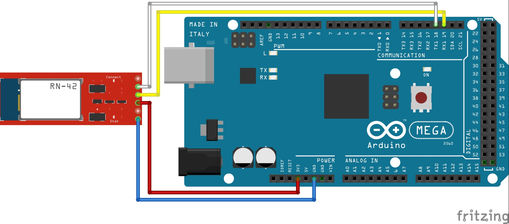
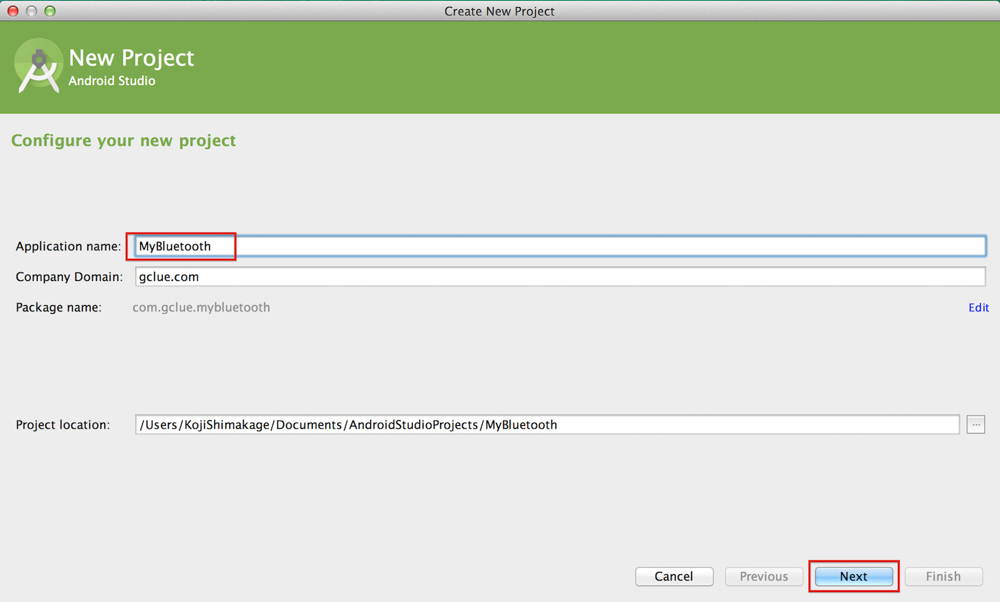

テキスト送受信
ここではArduinoからデータを送り、Android側でデータを受け取るという形式で連携してみたいと思います。
Arduino設定
まずはArduino側の設定を行います。
回路については「１.事前準備」で作成した回路を使用します。
Arduino UNOとArduino MEGAでは回路とスケッチが異なりますので別々に記載します。
回路ができましたらスケッチを書いてみましょう。
スケッチはArduino IDEを起動して行います。
Arduino UNO
回路 (Arduino Uno)

スケッチ (Arduino UNO)
1
2
3
4
5
6
7
8
9
10
11
12
13
14
15
16
17
18
19
20
21
22
23
24
25 | #include <SoftwareSerial.h>
SoftwareSerial android(2,3);
// SoftwareSerial android(12,13); // Fabo Brick使用時
void setup(){
// Bluetooth用のシリアルのポートを設定
android.begin(115200);
// arduinoのシリアルモニタ用
Serial.begin(9600);
Serial.write("init");
}
void loop(){
if(android.available()){
Serial.println(android.read());
}
if(Serial.available()){
android.write(Serial.read());
}
}
|
Arduino Mega
回路 (Arduino Mega)

スケッチ (Arduino Mega)
Arduino MegaではSoftserialがうまく動かないので18, 19番ピンを使用します。
18,19番ピンは
で呼び出せます。
Bluetoothモジュールと、Android間はデフォルトで、115200の速度なので
とします。
変更後はこちら
1
2
3
4
5
6
7
8
9
10
11
12
13
14
15
16
17
18
19
20 | void setup(){
// Bluetooth用のシリアルのポートを設定
Serial1.begin(115200);
// arduinoのシリアルモニタ用
Serial.begin(9600);
Serial.write("init");
}
void loop(){
if(Serial1.available()){
Serial.println(Serial1.read());
}
if(Serial.available()){
Serial1.write(Serial.read());
}
}
|
AndroidのProject作成
次にAndroid側のアプリを作成します。
Androidのアプリ作成には「Android Studio」を使用します。
Android Studioを起動し、Quick Startの一番上にある「Start a new Android Studio project」を選択します。

New Projectのウィンドウが表示されます。
Application nameにアプリ名「MyBluetooth」を入力し、「Next」ボタンを押下します。

ここは変更せずに「Next」ボタンを押下します。
Blank Activityを選択し、「Next」ボタンを押下します。

Activityの名前を入力し、「Finish」ボタンを押下します。
今回は名前を変更せずに進めます。

プロジェクトが作成されました。
ビューの表示形式を変更します。
画面左上にある「Android」という箇所をクリックすると、すぐ下に「Project」という項目が表示されるので、そちらを選択します。

ビューの表示形式が変更されました。

Bluetooth認識設定
次にBluetoothの認識設定を行います。
[app]>[src]>[main]>[res]内のAndroidManifest.xmlを開き、下記の内容を追加します。
| <uses-permission android:name="android.permission.BLUETOOTH" />
<uses-permission android:name="android.permission.BLUETOOTH_ADMIN" />
|
AndroidManifest.xml
変更後はこのような状態になります。
1
2
3
4
5
6
7
8
9
10
11
12
13
14
15
16
17
18
19
20
21
22
23
24 | <?xml version="1.0" encoding="utf-8"?>
<manifest xmlns:android="http://schemas.android.com/apk/res/android"
package="gclue.com.mybluetooth" >
<uses-permission android:name="android.permission.BLUETOOTH" />
<uses-permission android:name="android.permission.BLUETOOTH_ADMIN" />
<application
android:allowBackup="true"
android:icon="@drawable/ic_launcher"
android:label="@string/app_name"
android:theme="@style/AppTheme" >
<activity
android:name=".MainActivity"
android:label="@string/app_name" >
<intent-filter>
<action android:name="android.intent.action.MAIN" />
<category android:name="android.intent.category.LAUNCHER" />
</intent-filter>
</activity>
</application>
</manifest>
|
プログラム作成
[src]>[main]>[res]>[layout]内にあるactivity_main.xmlを変更します。
このファイルは画面レイアウトの設定するファイルになります。
activity_main.xmlファイルを開くとレイアウトが表示されるので、画面右下のタブから「Text」のタブを選択することでコードが入力できる状態になります。
activity_main.xml
1
2
3
4
5
6
7
8
9
10
11
12
13
14
15
16
17
18
19
20
21
22
23
24
25
26
27
28
29 | <?xml version="1.0" encoding="utf-8"?>
<LinearLayout xmlns:android="http://schemas.android.com/apk/res/android"
android:layout_width="fill_parent"
android:layout_height="fill_parent"
android:orientation="vertical" >
<Button android:id="@+id/connectButton"
android:layout_width="fill_parent"
android:layout_height="wrap_content"
android:text="Connect" />
<TextView
android:id="@+id/statusValue"
android:layout_width="fill_parent"
android:layout_height="wrap_content"
/>
<TextView
android:id="@+id/inputValue"
android:layout_width="fill_parent"
android:layout_height="wrap_content"
/>
<Button android:id="@+id/writeButton"
android:layout_width="fill_parent"
android:layout_height="wrap_content"
android:text="Write" />
</LinearLayout>
|
次に[src]にある「MainActivity.java」を開き、プログラムを入力します。
１行目のpackageの箇所は環境によって異なりますので、初期状態から変更せずそのままの状態にしてください。
また、"RNBT-205F"は「１.BLUETOOTH 事前準備」のペアリング時にでてきたデバイス名となりますので、それに合わせて変更して下さい。
MainActivity.java
1
2
3
4
5
6
7
8
9
10
11
12
13
14
15
16
17
18
19
20
21
22
23
24
25
26
27
28
29
30
31
32
33
34
35
36
37
38
39
40
41
42
43
44
45
46
47
48
49
50
51
52
53
54
55
56
57
58
59
60
61
62
63
64
65
66
67
68
69
70
71
72
73
74
75
76
77
78
79
80
81
82
83
84
85
86
87
88
89
90
91
92
93
94
95
96
97
98
99
100
101
102
103
104
105
106
107
108
109
110
111
112
113
114
115
116
117
118
119
120
121
122
123
124
125
126
127
128
129
130
131
132
133
134
135
136
137
138
139
140
141
142
143
144
145
146
147
148
149
150
151
152
153
154
155
156
157
158
159
160
161
162
163
164
165
166
167
168
169
170
171
172
173
174
175
176
177
178
179
180
181
182
183
184
185
186
187
188
189
190
191
192
193
194
195
196
197
198
199
200
201
202
203
204
205
206
207
208
209
210
211
212
213
214
215
216
217
218
219
220
221
222
223
224
225
226
227
228
229
230
231
232
233 | package gclue.com.mybluetooth;
import android.bluetooth.BluetoothAdapter;
import android.bluetooth.BluetoothDevice;
import android.bluetooth.BluetoothSocket;
import android.os.Bundle;
import android.os.Handler;
import android.os.Message;
//import android.support.v7.app.ActionBarActivity;
import android.support.v7.app.AppCompatActivity;
import android.util.Log;
import android.view.View;
import android.widget.Button;
import android.widget.TextView;
import java.io.IOException;
import java.io.InputStream;
import java.io.OutputStream;
import java.util.Set;
import java.util.UUID;
//public class MainActivity extends ActionBarActivity implements Runnable, View.OnClickListener {
public class MainActivity extends AppCompatActivity implements Runnable, View.OnClickListener {
/* tag */
private static final String TAG = "BluetoothSample";
/* Bluetooth Adapter */
private BluetoothAdapter mAdapter;
/* Bluetoothデバイス */
private BluetoothDevice mDevice;
/* Bluetooth UUID(固定) */
private final UUID MY_UUID = UUID.fromString("00001101-0000-1000-8000-00805F9B34FB");
/* デバイス名 環境に合わせて変更*/
private final String DEVICE_NAME = "RNBT-205F";
/* Soket */
private BluetoothSocket mSocket;
/* Thread */
private Thread mThread;
/* Threadの状態を表す */
private boolean isRunning;
/** 接続ボタン. */
private Button connectButton;
/** 書込みボタン. */
private Button writeButton;
/** ステータス. */
private TextView mStatusTextView;
/** Bluetoothから受信した値. */
private TextView mInputTextView;
/** Action(ステータス表示). */
private static final int VIEW_STATUS = 0;
/** Action(取得文字列). */
private static final int VIEW_INPUT = 1;
/** Connect確認用フラグ */
private boolean connectFlg = false;
/** BluetoothのOutputStream. */
OutputStream mmOutputStream = null;
@Override
public void onCreate(Bundle savedInstanceState){
super.onCreate(savedInstanceState);
// Layoutにて設定したビューを表示
setContentView(R.layout.activity_main);
// TextViewの設定(Layoutにて設定したものを関連付け)
mInputTextView = (TextView)findViewById(R.id.inputValue);
mStatusTextView = (TextView)findViewById(R.id.statusValue);
// Buttonの設定(Layoutにて設定したものを関連付け)
connectButton = (Button)findViewById(R.id.connectButton);
writeButton = (Button)findViewById(R.id.writeButton);
// ボタンのイベント設定
connectButton.setOnClickListener(this);
writeButton.setOnClickListener(this);
// Bluetoothのデバイス名を取得
// デバイス名は、RNBT-XXXXになるため、
// DVICE_NAMEでデバイス名を定義
mAdapter = BluetoothAdapter.getDefaultAdapter();
mStatusTextView.setText("SearchDevice");
Set< BluetoothDevice > devices = mAdapter.getBondedDevices();
for ( BluetoothDevice device : devices){
if(device.getName().equals(DEVICE_NAME)){
mStatusTextView.setText("find: " + device.getName());
mDevice = device;
}
}
}
// 別のアクティビティが起動した場合の処理
@Override
protected void onPause(){
super.onPause();
isRunning = false;
connectFlg = false;
try{
mSocket.close();
}
catch(Exception e){}
}
// スレッド処理(connectボタン押下後に実行)
@Override
public void run() {
InputStream mmInStream = null;
Message valueMsg = new Message();
valueMsg.what = VIEW_STATUS;
valueMsg.obj = "connecting...";
mHandler.sendMessage(valueMsg);
try{
// 取得したデバイス名を使ってBluetoothでSocket接続
mSocket = mDevice.createRfcommSocketToServiceRecord(MY_UUID);
mSocket.connect();
mmInStream = mSocket.getInputStream();
mmOutputStream = mSocket.getOutputStream();
// InputStreamのバッファを格納
byte[] buffer = new byte[1024];
// 取得したバッファのサイズを格納
int bytes;
valueMsg = new Message();
valueMsg.what = VIEW_STATUS;
valueMsg.obj = "connected.";
mHandler.sendMessage(valueMsg);
connectFlg = true;
while(isRunning){
// InputStreamの読み込み
bytes = mmInStream.read(buffer);
Log.i(TAG,"bytes="+bytes);
// String型に変換
String readMsg = new String(buffer, 0, bytes);
// null以外なら表示
if(readMsg.trim() != null && !readMsg.trim().equals("")){
Log.i(TAG,"value="+readMsg.trim());
valueMsg = new Message();
valueMsg.what = VIEW_INPUT;
valueMsg.obj = readMsg;
mHandler.sendMessage(valueMsg);
}
}
}
// エラー処理
catch(Exception e){
valueMsg = new Message();
valueMsg.what = VIEW_STATUS;
valueMsg.obj = "Error1:" + e;
mHandler.sendMessage(valueMsg);
try{
mSocket.close();
}catch(Exception ee){}
isRunning = false;
connectFlg = false;
}
}
// ボタン押下時の処理
@Override
public void onClick(View v) {
if(v.equals(connectButton)) {
// 接続されていない場合のみ
if (!connectFlg) {
mStatusTextView.setText("try connect");
mThread = new Thread(this);
// Threadを起動し、Bluetooth接続
isRunning = true;
mThread.start();
}
} else if(v.equals(writeButton)) {
// 接続中のみ書込みを行う
if (connectFlg) {
try {
// Writeボタン押下時、'2'を送信
mmOutputStream.write("2".getBytes());
// 画面上に"Write:"を表示
mStatusTextView.setText("Write:");
} catch (IOException e) {
Message valueMsg = new Message();
valueMsg.what = VIEW_STATUS;
valueMsg.obj = "Error2:" + e;
mHandler.sendMessage(valueMsg);
}
} else {
mStatusTextView.setText("Please push the connect button");
}
}
}
/**
* 描画処理はHandlerでおこなう
*/
Handler mHandler = new Handler() {
@Override
public void handleMessage(Message msg) {
int action = msg.what;
String msgStr = (String)msg.obj;
if(action == VIEW_INPUT){
mInputTextView.setText(msgStr);
}
else if(action == VIEW_STATUS){
mStatusTextView.setText(msgStr);
}
}
};
}
|
Android端末での実行設定
アプリケーション実行、及び確認
準備が完了しましたので、作成したアプリケーションを実行してみましょう。
AndroidのConnectボタンを押すと、１〜３秒ほどで赤点滅から緑の点灯にかわります。
これでデータが送受信できる状態になりました。
Connectが完了しましたら、次にAndroidのWriteボタンを押します。
Arduino側のシリアルモニタを確認すると、50(2のasciiコード)が転送されます。
※Arduino側でSerial.write(取得値)とするか、char型の変数に格納してから出力すると「2」が出力されます。

ArduinoのSerial Consoleで、文字を入力し、送信を押すと、Androidに文字が送られ画面に表示されます。
Arduino側で文字を入力し、送信ボタンを押下します。

Android側に文字が表示されました。